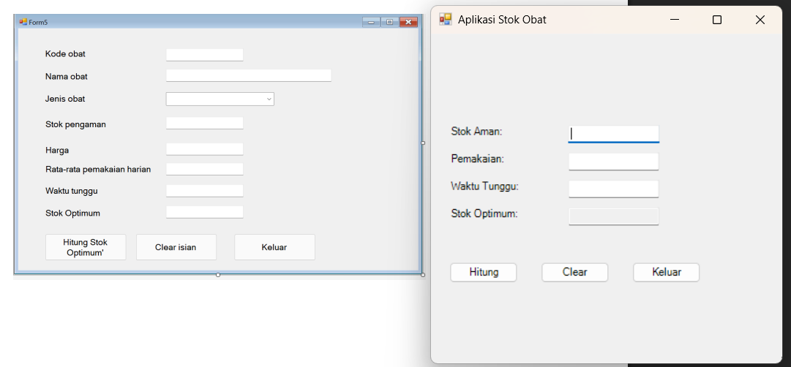
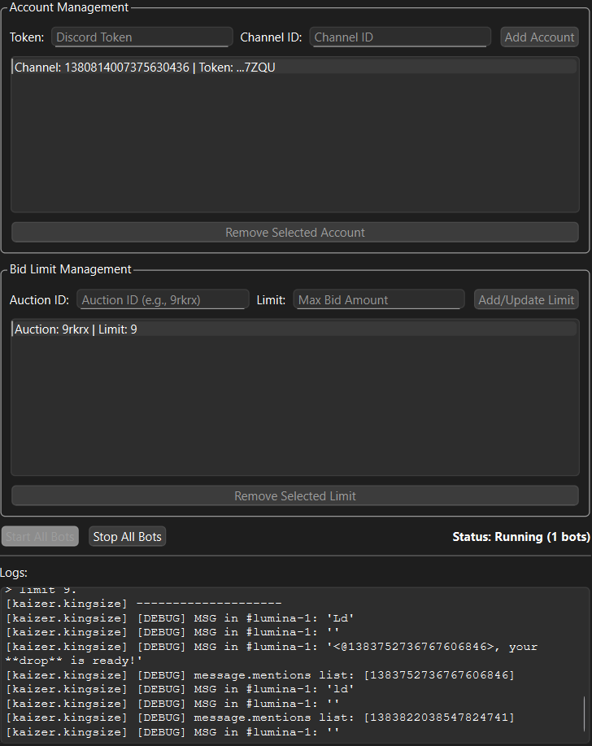
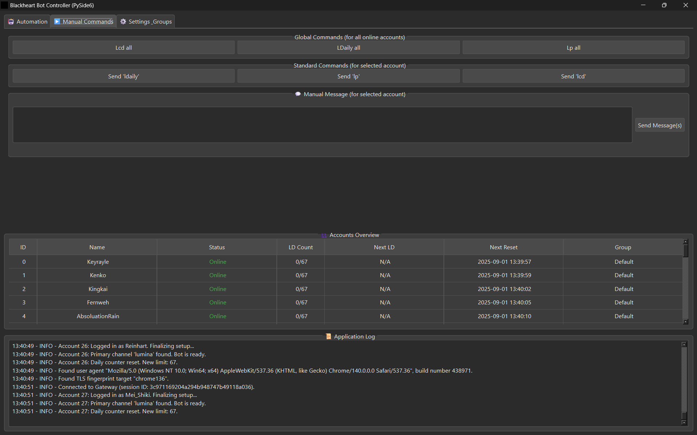
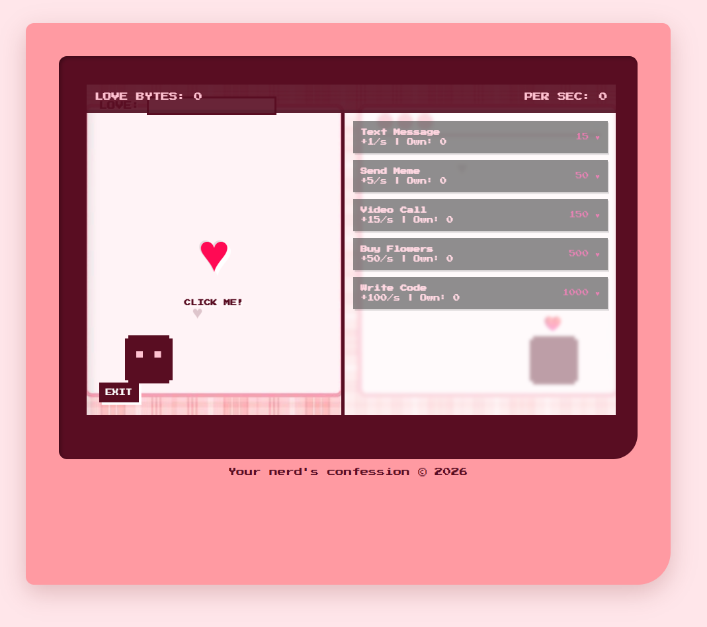

Saya adalah mahasiswa jurusan Informatika di Universitas Siber Asia (UNSIA) yang memiliki minat besar dalam pengembangan Software dan otomatisasi. Saya berfokus pada pembuatan aplikasi dengan GUI dan skrip utility untuk meningkatkan efisiensi tugas sehari-hari.
Selain pemrograman, saya memiliki ketertarikan mendalam pada bidang cybersecurity, khususnya dalam audit keamanan jaringan dan pengujian penetrasi. Di waktu luang, saya aktif dalam komunitas esports, memantau analisis meta permainan, merakit dan memperbaiki komputer, serta menikmati berbagai karya literatur visual. Moto saya adalah terus belajar dan beradaptasi dengan perkembangan teknologi terbaru.
| Tahun | Institusi | Jenjang / Jurusan |
|---|---|---|
| 2025 - Sekarang | Universitas Siber Asia | Ilmu Komputer |
| 2024 - 2025 | Universitas Multimedia Nusantara | Teknik Informatika |
| 2022 - 2024 | SMK Mutiara Bangsa 7 | Keahlian Teknologi |
| 2019 - 2021 | SMP Melania 2 | Pendidikan Dasar |
| 2015 - 2018 | SD Santo Fransiskus 2 | Pendidikan Dasar |
| 2013 - 2014 | SD Don Bosco | Pendidikan Dasar |
| 2010 - 2012 | TK Don Bosco | Pendidikan Anak Usia Dini |
| Nama Proyek | Deskripsi Singkat |
|---|---|
| Discord Account Auto Farm & Manager | Pengendali terpusat berbasis PySide6 untuk mengotomatiskan manajemen multi-akun Discord. |
| Sistem Auto Bidder | Otomatisasi sistem bid (penawaran) pada lelang berbasis server Discord. |
| Aplikasi Perhitungan Stok Obat | Sistem kalkulasi stok pengaman dan optimum obat menggunakan VB.NET. |
| Discord Automation Bot | Pembuatan bot kustom untuk sistem lelang dan utilitas server. |
| Website Interaktif & Mini-Game | Pengembangan halaman web responsif yang dilengkapi fitur galeri dan permainan interaktif. |

Aplikasi Perhitungan Stok Obat (VB.NET)

Sistem Auto Bidder Lelang Discord (Python)

Discord Account Auto Farm & Manager (PySide6)

Website Mini-Game Clicker (HTML/CSS/JS)